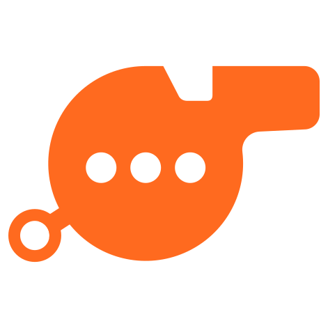

ModScrimA private practice chat floods with spam built to slip past your own filters. Your mods race to clear it. Twitch grades the filters. You push the fix, and undo it in one click.
It catches the exact phrase. One swapped letter, one extra space, and the same scam walks straight past it.
Nobody finds out until a real raid.
A PRD for scope, copy and safety; an SRS for architecture, data, algorithms and tests. They are the source of truth.
AGENTS.md tells Codex which spec wins, the safety rules it must never break, and that it may not add an unlisted feature, endpoint, dependency or table.
Numbered tickets on the project board, each citing the exact spec sections. One ticket per branch and PR.
Write the tests the SRS names, watch them fail, then implement. npm test and npm run typecheck must pass.
Codex works from the tickets; the two of us review, test and decide. Commits are authored by the human builders.
docs/LOG.md records decisions, the day-0 dry run, each Codex session and a note per working session.
Attack lines are never sent to Twitch chat. The one sendable message is a fixed announcement behind ANNOUNCE_ENABLED, which is off.
Every generated link ends in .invalid. Slurs exist only as placeholders drawn as blocks:
Overlay sockets get only { lineId, user, len }. No readable attack, no reveal, no terms.
No blocked term reaches Twitch without approval. Undo removes only the terms that drill added.
ModScrim reads AutoMod settings and never calls the update endpoint.
Demo rooms never call Twitch, D1, R2 or the queue, and delete themselves after two idle hours.
Public chat kept 7 days for the false-ban check; pause or delete any time; gone on sign-out.
Every grade names its engine: "graded by Twitch" or "local estimate".
Every safety rule is a test, not a promise. The engine is pure and seeded, so the same seed builds the same wave and every drill can be replayed.
Plus 18 Playwright spec files (surfaces, a11y, safety, full demo loop), a contrast gate, typecheck and a 250 KiB JS budget in CI.
Try a full drill in 60 seconds. No account. Nothing is posted to Twitch.
Built by Harsh Bhanushali and Dhairya Patel with OpenAI Codex · Codex x TwitchCon 2026
channel.chat.message webhook feeds the 7-day false-ban loguser.authorization.revoke cleans upAttacks are generated to slip past this channel's own public blocked terms, using spacing, number swaps, look-alike letters and more.
The score comes from Twitch's Check AutoMod Status, not from us. When it cannot be used, the number says "local estimate".
Proposed terms face a held-out wave of 30 attacks from a new seed, with tricks the rule finder never saw.
A term that would match the last 7 days of real chat, or harmless banter, is rejected and shown with the line it would have hit.
Nothing ships without the streamer's click. Undo removes exactly the terms that drill added, never ones that already existed.
The engine is pure and seeded: the same seed builds the same wave. No AI runs at runtime.